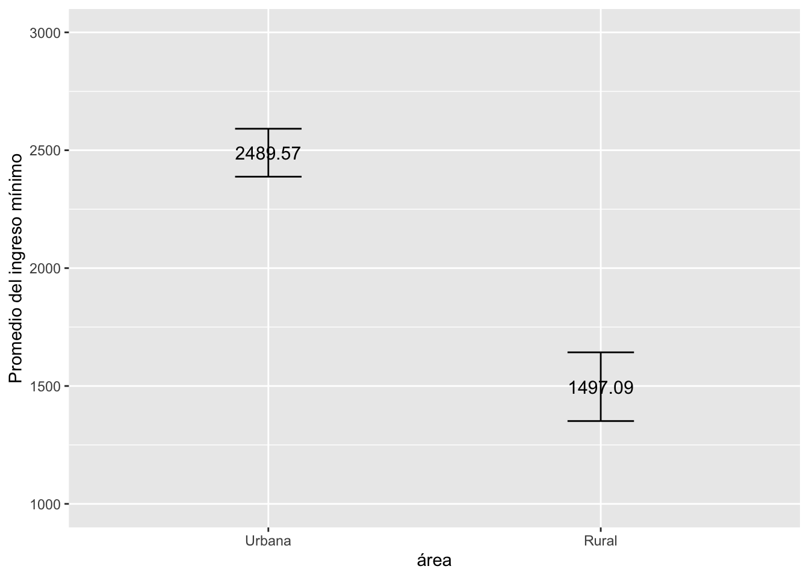
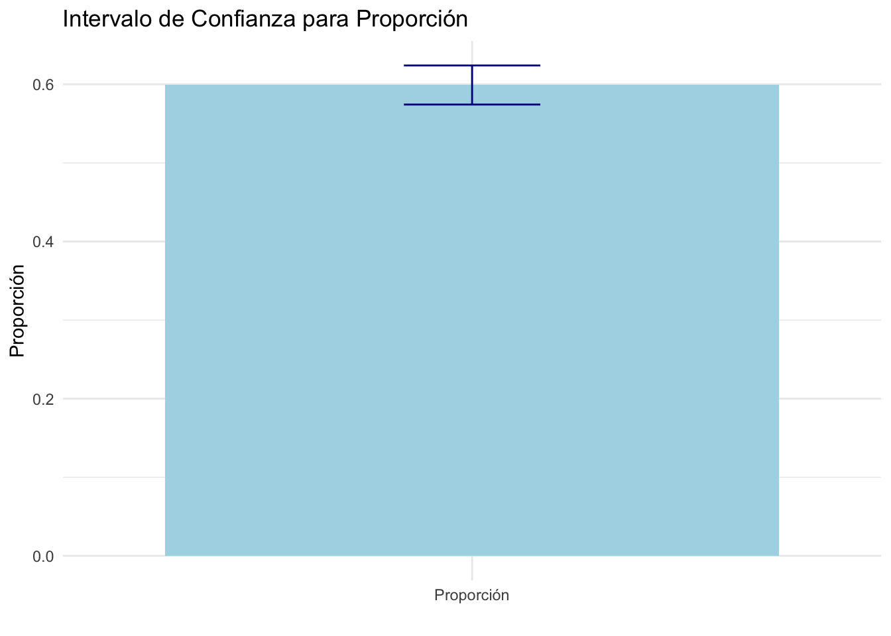

https://iep.org.pe/wp-content/uploads/2025/03/IEP-Informe-de-opinion-marzo-2025-informe-completo.pdf
Una encuesta es una técnica de recolección de datos que se utiliza para conocer opiniones, comportamientos o características de un grupo de personas, a través de preguntas estructuradas.
Ejemplo: Un medio de comunicación realiza una encuesta para saber qué tan satisfechos están los ciudadanos con el gobierno local.
Las encuestas se aplican a una muestra de personas, porque no es posible preguntarles a todos.
La estadística inferencial es la rama de la estadística que permite hacer conclusiones o predicciones sobre una población completa, a partir de los resultados obtenidos en una muestra.
🔍 Es decir, “infiero” o estimo lo que piensa o hace toda una población basándome en los datos de una parte de ella (la muestra).
“Inferir” significa extraer una conclusión a partir de hechos particulares a hechos generales.
En la estadística inferencial se estudian técnicas y procedimientos con el objetivo de extender o generalizar la información de una muestra aleatoria a la población.
Cuando haces una encuesta, estás obteniendo datos de una muestra. Luego, con la estadística inferencial, puedes extrapolar esos datos y hacer afirmaciones con cierto nivel de confianza sobre toda la población.
Ejemplo: Si 62% de los encuestados dijeron que no confían en las redes sociales como fuente de noticias,la estadística inferencial permite afirmar que probablemente un porcentaje similar ocurre en toda la población, con un cierto margen de error.
Cuando deseamos generaliza la información de una muestra aleatoria a la población.
Los razonamientos de la inferencia estadística al igual que la probabilidad tratan sobre las regularidades que aparecen después de muchas repeticiones. La inferencia es más fiable cuando los datos se han obtenido a partir de un diseño aleatorio.
Estimar un parámetro poblacional mediante un estadístico que predice el valor de dicho parámetro.
Para variables categóricas, se puede estimar proporciones o porcentajes poblacionales para las categorías.
Para variables numéricas, se puede estimar una media poblacional.
Las propiedades deseables son: Insesgadez (igual al parámetro), eficiencia (varianza reducida),suficiencia (utiliza toda la información de la muestra) y consistencia (el parámetro más preciso aún la muestra sea más grande).
La estimación por intervalos asigna un intervalo de confianza en que los valores de los parámetros puede tener a partir los estadísticos de la muestra.
¿Qué entendemos por confianza?
Significa que la probabilidad de que en un muestreo repetido, el intervalo contenga el verdadero valor del parámetro.
Nivel de confianza: Grado de confianza calculado que un procedimiento estadístico realizado con muestrales producirá un resultado correcto para la población muestrada.
Intervalo de confianza: Rango o intervalo de calores dentreo del cual se cree que estaría el parámetro poblaciona
Margen de error: Mide qué tan preciso es la estimación del parámetro.
Cuando queremos estimar la media poblacional a partir de una muestra, usamos el siguiente intervalo de confianza:
IC = {x} (z )
El valor crítico es un número que se utiliza en estadística para construir intervalos de confianza y tomar decisiones en pruebas de hipótesis. En el caso del intervalo de confianza para la media, el valor crítico define cuántas unidades (por ejemplo, desviaciones estándar) debemos ir hacia arriba y hacia abajo desde la media muestral para estimar el rango en el cual probablemente se encuentra la media poblacional.
El valor z, también conocido como puntuación z, indica cuántas desviaciones estándar se encuentra un dato respecto a la media en una distribución normal estándar (media 0 y desviación estándar 1). Se calcula mediante la fórmula:
\[ z = \frac{X - \mu}{\sigma} \]
El valor crítico z∗ es el valor que captura la probabilidad central C por debajo de la curva normal estandarizada entre −z∗ y z∗.
Donde:
X X es el valor observado. μ es la media poblacional. σ es la desviación estándar poblacional.
Este valor permite estandarizar diferentes distribuciones y compararlas en una escala común.
El valor crítico es un valor específico de z que delimita las áreas bajo la curva normal correspondientes a un nivel de confianza determinado. Por ejemplo:
Para un 95% de confianza, el valor crítico es aproximadamente ±1.96. Para un 99% de confianza, es aproximadamente ±2.576. Estos valores se obtienen de tablas de la distribución normal estándar y representan los puntos z donde se acumula el porcentaje deseado de la distribución.
El intervalo de confianza estima un rango en el cual se espera que se encuentre la media poblacional con un cierto nivel de confianza. La fórmula es:
\[ \bar{x} \pm z^* \times \frac{\sigma}{\sqrt{n}} \]
Donde:
x: Media muestral z ∗ : Valor crítico correspondiente al nivel de confianza deseado σ: Desviación estándar poblacional n: Tamaño de la muestra
Si el promedio de nota del curso de lenguaje es de 16 de una muestra de 100 estudiantes. Y la desviación estándar es 3.5, El intervalo de confianza al 95% del nivel de confianza será:
Limite inferior : \[16 - 1.96∗ \frac{3.5} { \sqrt[]100} \]
Limite superior: \[16 + 1.96∗ \frac{3.5} { \sqrt[]100} \]
A un nivel de confianza del 95% el intervalo de confianza de la nota del curso de lenguaje oscila entre 15.3 y 16.6.
De la manera similar a lo anterior, estimamos el intervalo de confianza de una proporción. Sin embargo, dado que no se tiene la desviación estándar, se reemplaza por la proporción multiplicada por 1 menos la proporción. p*(1-p).
El intervalo de confianza para una proporción sigue la siguiente fórmula \[\bar{p} ± z∗ \sqrt[]\frac{\bar{p}(1-\bar{p})} { n} \]
Si el 30% aprueba el actual gobierno, de una muestra de 100 encuestados, entonces, a un nivel de confianza al 90%, ¿Cuál es el intervalo de confianza?
Limite inferior: \[\bar{0.3} - 1.645∗ \sqrt[]\frac{0.3(1-0.3)} {100} \]
Limite superior: \[\bar{0.3} + 1.645∗ \sqrt[]\frac{0.3(1-0.3)} {100} \]
La aprobación al actual gobierno de los peruanos y las peruanas a un 90% de nivel de confianza oscila entre 22.5% y 37.5% .
Usamos la Encuesta Nacional de Percepción de Desigualdades ENADES.
Revisa el cuestionario.https://iep.org.pe/wp-content/uploads/2022/08/Cuestionario-Oxfam-IEP.-ENADES-2022-final.pdf
setwd("/Volumes/Macintosh HD - Datos/12 PUCP-Docencia/2025/POL278")
library(rio)
data=import("OXFAM_IEP_ENADES_2022_final.sav")library(rio)
data=import("OXFAM_IEP_ENADES_2022_final.sav")Revisa el cuestionario.
Damos formato a la variable de interés con as.factor.
data$p08=as.numeric(data$p08)data$p08=as.numeric(data$p08)Calculamos la media y la desviación
mean(data$p08,na.rm = T)
sd(data$p08,na.rm = T)mean(data$p08,na.rm = T)## [1] 2333.942sd(data$p08,na.rm = T)## [1] 1731.041Ahora coloca los datos en una tabla. Gráfica un boxplot y un histograma
Calculamos el intervalo de confianza de la media
library(lsr)
ciMean(data$p08,na.rm = T,conf = 0.95)library(lsr)
ciMean(data$p08,na.rm = T,conf = 0.95)## 2.5% 97.5%
## [1,] 2243.285 2424.599Coloca los resultados en una tabla
library(dplyr)
ic_grupo = data %>%
summarise(Media = mean(p08, na.rm=T),
LimiteInferior = ciMean(p08, na.rm=T)[1],
LimiteSuperior = ciMean(p08, na.rm=T)[2])
ic_grupolibrary(dplyr)
ic_grupo = data %>%
summarise(Media = mean(p08, na.rm=T),
LimiteInferior = ciMean(p08, na.rm=T)[1],
LimiteSuperior = ciMean(p08, na.rm=T)[2])
ic_grupo## Media LimiteInferior LimiteSuperior
## 1 2333.942 2243.285 2424.599¿Cuál es el intervalo de confianza del promedio del monto minimos que un hogar requiere para vivir p08 según el área de residencia?
Muchos investigadores afirman que existe una brecha entre el monto mínimo que un hogar requiere para vivir p08 según al ámbito de residencia (rural o urbano) area2. ¿Es cierto?
Primero se da formato a la variables area2.
data$area2=as.factor(data$area2)
data$area2=factor(data$area2, levels = levels(data$area2), labels = c("Urbana","Rural"))data$area2=as.factor(data$area2)
data$area2=factor(data$area2, levels = levels(data$area2), labels = c("Urbana","Rural"))library(dplyr)
ic_grupo = data %>%
group_by(area2)%>%summarise(Media = mean(p08, na.rm=T),
LimiteInferior = ciMean(p08, na.rm=T)[1],
LimiteSuperior = ciMean(p08, na.rm=T)[2])
ic_grupolibrary(dplyr)
ic_grupo = data %>%
group_by(area2)%>%summarise(Media = mean(p08, na.rm=T),
LimiteInferior = ciMean(p08, na.rm=T)[1],
LimiteSuperior = ciMean(p08, na.rm=T)[2])
ic_grupo## # A tibble: 2 × 4
## area2 Media LimiteInferior LimiteSuperior
## <fct> <dbl> <dbl> <dbl>
## 1 Urbana 2490. 2388. 2591.
## 2 Rural 1497. 1351. 1643.library(ggplot2)
ggplot(ic_grupo, aes(x= area2, y =Media)) +
geom_errorbar(aes(ymin=LimiteInferior, ymax=LimiteSuperior), width = 0.2)+
geom_text(aes(label=paste(round(Media, 2))), size=4)+
xlab("Estrato") + ylab("Promedio del nivel de discriminación")+
ylim(1000, 3000) #indicamos los límites del eje ylibrary(ggplot2)
ggplot(ic_grupo, aes(x= area2, y =Media)) +
geom_errorbar(aes(ymin=LimiteInferior, ymax=LimiteSuperior), width = 0.2)+
geom_text(aes(label=paste(round(Media, 2))), size=4)+
xlab("área") + ylab("Promedio del ingreso mínimo")+
ylim(1000, 3000) #indicamos los límites del eje y
Calcula el IC de la proproción de quienes considera que ha aumentado ante la siguiente pregunta: En los últimos dos años, ¿cree que la diferencia entre ricos y pobres en el Perú…?
table(data$p05)table(data$p05)##
## 1 2 3 99
## 917 367 224 22data$diferencia=as.factor(data$p05)
data$diferencia=factor(data$diferencia, levels=levels(data$diferencia), labels=c("Ha aumentado","Se mantiene igual","Ha disminuido","NS"))data$diferencia=as.factor(data$p05)
data$diferencia=factor(data$diferencia, levels=levels(data$diferencia), labels=c("Ha aumentado","Se mantiene igual","Ha disminuido","NS"))table(data$diferencia)
sum(table(data$diferencia))table(data$diferencia)##
## Ha aumentado Se mantiene igual Ha disminuido
## 917 367 224
## NS
## 22sum(table(data$diferencia))## [1] 1530Reemplazo los valores
test_result <- prop.test(917, 1530, conf.level = 0.95)test_result <- prop.test(917, 1530, conf.level = 0.95)# Extraer los resultados
proporcion <- test_result$estimate
lower_ci <- test_result$conf.int[1]
upper_ci <- test_result$conf.int[2]# Extraer los resultados
proporcion <- test_result$estimate
lower_ci <- test_result$conf.int[1]
upper_ci <- test_result$conf.int[2]Creo una pequeña base de datos
# Crear un data frame para ggplot
datita <- data.frame(
Categoria = "Proporción",
Proporción = proporcion,
Lower_CI = lower_ci,
Upper_CI = upper_ci
)# Crear un data frame para ggplot
datita <- data.frame(
Categoria = "Proporción",
Proporción = proporcion,
Lower_CI = lower_ci,
Upper_CI = upper_ci
)# Graficar
ggplot(datita, aes(x = Categoria, y = Proporción)) +
geom_bar(stat = "identity", fill = "lightblue") +
geom_errorbar(aes(ymin = Lower_CI, ymax = Upper_CI), width = 0.2, color = "darkblue") +
labs(title = "Intervalo de Confianza para Proporción",
y = "Proporción",
x = "") +
theme_minimal()# Graficar
ggplot(datita, aes(x = Categoria, y = Proporción)) +
geom_bar(stat = "identity", fill = "lightblue") +
geom_errorbar(aes(ymin = Lower_CI, ymax = Upper_CI), width = 0.2, color = "darkblue") +
labs(title = "Intervalo de Confianza para Proporción",
y = "Proporción",
x = "") +
theme_minimal()
Calcula y gráfica los intervalos de confianza para cada categoría de respuesta de la pregunta anterior (p05).
Calcula y gráfica el intervalo de confianza :
P10 ¿Qué tan grave es la desigualdas entre personas blancas y no blancas?
P12.4 En una escala del 1 al 10 , que tan de acuerdo con que el país está gobernado solo por Lima, la capital, y no se toma en cuenta a las otras regiones.